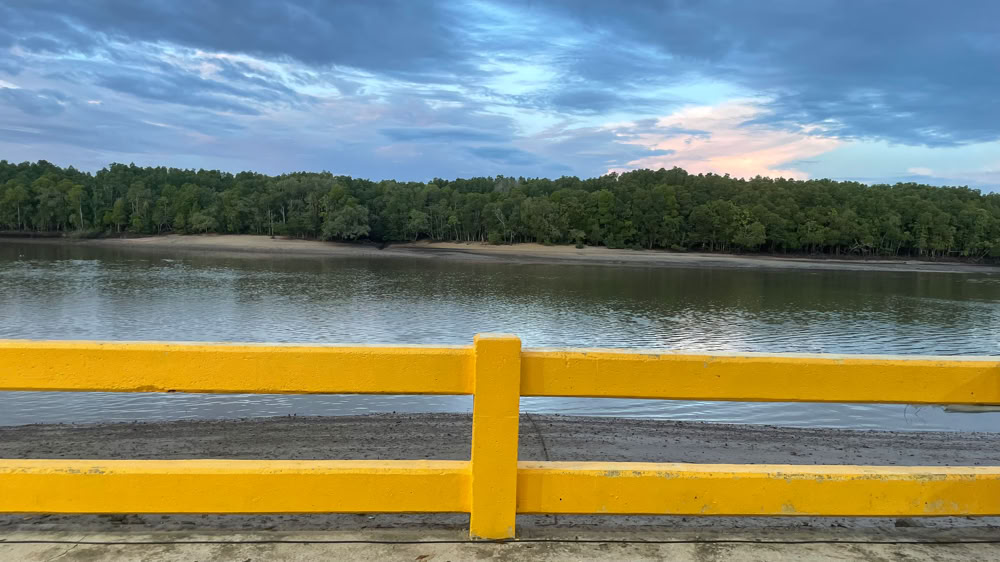

Souvenirs de Thaïlande
Le départ
Pendant vingt-sept ans, Alice et moi avons partagé la même chambre, la même table. A sa retraite, son rêve de chambre d’hôtes c‘était réalisé en bâtissant une maison en Normandie. Notre chambre d’hôtes n’était pas seulement un lieu de passage pour les voyageurs, c’était notre royaume discret. Les petits-déjeuners au café brûlant, les draps frais, les conversations du soir devant un feu ouvert et une bonne bouteille de vin. Une vie simple, mais pleine. Une vie construite à deux.
Dix ans après le début de notre installation, la maladie est entrée sans frapper. Elle s’est installée, patiente, obstinée. Elle a grignoté le quotidien, lentement. Les hôpitaux, les examens, l’espoir qui monte et qui redescend. Et moi, à côté, impuissant mais debout. On apprend à devenir fort quand on n’a pas le choix. En 2022, elle est partie.
Le silence qui a suivi n’était pas un silence ordinaire. C’était un vide dense, presque physique. J’ai subi ce que les médecins appellent un “choc cognitif”. Moi, j’appelle ça un effondrement intérieur. Le cerveau qui se protège en se brouillant. Les repères qui disparaissent. La réalité qui devient floue. Je fonctionnais, mais je n’étais plus vraiment là.
Un ami médecin m’a conseillé de partir. Changer d’air pour ne pas sombrer. Alors je suis parti en République dominicaine. Pas pour le plaisir. Pour survivre. Le soleil, la mer, les visages inconnus. J’essayais d’exister ailleurs, dans un décor qui ne me rappelait rien.
Puis je suis revenu.
Il fallait affronter la maison. Ses chaussures encore alignées. Ses manteaux élégants, suspendus comme si elle allait rentrer. J’ai tout jeté. Chaque geste était une déchirure. On croit qu’on se débarrasse d’objets. En réalité, on arrache des morceaux de mémoire.
Ensuite est venue l’épreuve du testament. Les papiers, les signatures, l’administration froide. Et la haine. Celle de la famille adverse. Les regards accusateurs, les soupçons, les mots qui blessent. Comme si perdre la femme de sa vie ne suffisait pas. Comme s’il fallait encore justifier d’avoir aimé.
À ce moment-là, quelque chose s’est cassé définitivement en moi.
Alors, en octobre 2022, je suis parti à Phuket.
Je ne savais pas que ce serait un départ sans retour. Je ne savais pas que ce serait le début d’un autre chapitre. Je savais seulement que rester aurait été mourir un peu plus chaque jour.
Phuket n’était pas un rêve exotique. C’était une fuite. Mais parfois, fuir est la seule manière de continuer à respirer.
Et je suis encore là.
Le mois suspendu
À Phuket, je ne suis resté qu’un mois.
Un mois, ce n’est rien dans une vie. Mais parfois, un mois suffit pour sentir qu’on respire à nouveau.
La vie y était simple. Presque primitive dans le bon sens du terme. Le soleil se levait sans drame. Les gens souriaient sans arrière-pensée. Les journées n’avaient pas la lourdeur des souvenirs à chaque coin de rue. Je marchais beaucoup. Je regardais la mer. Je mangeais dehors. Je ne faisais rien d’extraordinaire — et c’était justement ça, le miracle.
La douleur était toujours là. Alice ne disparaissait pas sous les palmiers. On n’efface pas vingt-sept ans avec un billet d’avion. Mais la souffrance changeait de texture. Elle était moins étouffante. Moins collée à ma peau. Je me suis surpris à me sentir bien. Pas heureux — ce mot aurait été indécent à ce moment-là — mais vivant.
Au bout d’un mois, je suis rentré en Belgique.
Et là, le contraste a été brutal. Le ciel gris. La maison chargée d’ombres. Les pièces pleines d’un passé devenu trop lourd. J’ai compris quelque chose de très simple : si je restais, je me fossiliserais. Je deviendrais un gardien de souvenirs, pas un homme vivant. Alors j’ai décidé.
Vendre la maison, vendre les meubles, vendre la voiture.
Tout ce qui avait constitué notre stabilité devenait soudain inutile. Ce n’était pas une impulsion romantique. C’était une décision froide, presque chirurgicale. Couper pour survivre.
Autour de moi, certains ont dû penser que je perdais la tête. Peut-être que c’était vrai, en partie. Mais parfois, ce qu’on appelle folie n’est qu’un instinct de survie que les autres n’osent pas suivre.
Je ne partais pas chercher une nouvelle vie idéalisée. Je partais parce que l’ancienne était devenue inhabitable.
Je me suis installé en Thaïlande. Pas pour fuir le passé — on ne fuit jamais complètement — mais pour me donner une chance de ne pas être uniquement un veuf. Une chance d’être encore un homme, avec des matins devant lui.
Ce n’était pas une renaissance spectaculaire. Plutôt un redémarrage lent. Comme un moteur qu’on relance après un long hiver.
Et je crois que, sans le savoir, c’est à ce moment-là que j’ai recommencé à exister.
Réapprendre à vivre
Après mon installation, j’ai voulu m’ancrer. Pas flotter. Vivre ici, vraiment.
J’ai loué une belle maison. Lumineuse, ouverte, traversée d’air chaud.
Je me suis acheté une voiture et des meubles.
Rebâtir un quotidien, c’est étrange. On choisit une table comme si on décidait d’un futur. On installe un lit dans une pièce qui n’a jamais connu vos nuits. Tout est neuf, même le silence.
Très vite, j’ai compris que la Thaïlande ne serait pas un simple décor exotique. C’est un pays subtil, parfois déroutant. Les lois ont leur logique propre. Les heures précises où l’on peut acheter de l’alcool. Ni avant, ni après. Une organisation du temps qui semble presque morale. Cela m’amusait et m’intriguait à la fois.
Mais la vraie découverte a commencé dans l’assiette.
La nourriture thaïlandaise n’est pas un plat, c’est une attaque sensorielle. Le piment n’est pas un condiment ici, c’est une déclaration de guerre. La première fois, j’ai cru que ma bouche allait s’embraser pour de bon. Et puis on s’habitue. On apprivoise la brûlure. On découvre que derrière le feu, il y a des couches de saveurs.
Les fruits m’ont surpris davantage encore. Des mangues d’une douceur presque obscène. Des fruits que je n’avais jamais vus en Europe. Le dragon fruit, avec sa chair irréelle. Le ramboutan, hérissé comme une créature de science-fiction. Le durian, interdit dans certains hôtels tant son odeur est puissante, presque animale. La nature ici ne fait pas dans la demi-mesure.
Et puis il y a eu les insectes
Grillons frits. Vers croustillants. Sauterelles. Au début, c’est le cerveau européen qui bloque. L’éducation. Les habitudes. Et puis on goûte. Croustillant. Salé. Pas si différent d’une crevette, si l’on est honnête. Le dégoût est culturel, pas biologique. Cette simple réalisation m’a fait réfléchir : combien de nos certitudes sont simplement des habitudes déguisées en vérités ?
Manger est devenu une exploration. Chaque repas une petite aventure. Je ne redécouvrais pas seulement un pays, je redécouvrais mes propres limites.
Et puis, après cette reconquête par les sens — le goût, la brûlure, l’étrangeté — il y a eu une autre redécouverte.
Le sexe
Trois mois sans sexe, après la mort d’Alice. Trois mois où le corps était resté en suspens. Comme si le désir devait se taire par respect. Comme si la fidélité devait survivre au-delà de la vie.
Mais le corps n’obéit pas aux cérémonies du deuil. Il réclame la chaleur. Le contact. La preuve tangible qu’on est encore vivant.
Il devenait urgent de me reconnecter à ça.
Ce n’était pas seulement une question de plaisir. C’était une question d’existence. Le sexe, c’est le corps qui dit : je respire encore. Je sens. Je veux.
Et lorsque j’ai franchi ce pas, j’ai compris quelque chose d’essentiel : aimer une femme pendant vingt-sept ans n’empêche pas le sang de continuer à circuler. Le désir n’est pas une trahison. C’est un mécanisme de survie.
Entre les piments qui brûlent, les fruits exotiques, les insectes croquants, les lois étranges et les nuits chaudes, je me suis réinstallé dans la vie. Pas celle d’avant. Une autre. Plus brute. Plus lucide.
Au début, il y a eu des femmes.
Des rencontres simples. Des conversations maladroites. Des regards échangés dans des bars ouverts sur la nuit chaude. Rien de théâtral. Juste deux solitudes qui se croisent. Le désir revenait doucement, presque timide. Mon corps se rappelait qu’il savait encore vibrer.
Puis un soir, je suis entré dans une boîte pleine d’ambiance, musique forte, lumières mouvantes, rires, chaleur humaine. Ce genre d’endroit où personne ne demande d’où tu viens ni ce que tu as perdu. On est là, juste là.
C’est ce soir-là que j’ai rencontré des ladyboys — ce que la Thaïlande appelle les kathoey. Ni caricature, ni mystère folklorique. Des personnes réelles, élégantes, sûres d’elles, parfois plus féminines que beaucoup de femmes européennes. Et j’ai été surpris.
Moi qui m’étais toujours pensé hétéro, sans ambiguïté, je me suis senti vaguement attiré. Pas par une “catégorie”. Par une présence. Par une énergie. Quelque chose de troublant. Une personne qui semblait réunir des codes masculins et féminins à la fois.
Mon cerveau a d’abord protesté. Les étiquettes, les années d’habitude, l’éducation. Puis le corps, lui, n’avait pas les mêmes scrupules. Le corps ne connaît pas les définitions philosophiques. Il réagit à une voix, à un regard, à une manière de bouger. Ce trouble m’a forcé à réfléchir.
Pendant des décennies, je m’étais cru clairement défini. Et voilà qu’un pays, une nuit, une rencontre fissuraient cette certitude. Non pas en la détruisant, mais en l’élargissant.
On peut passer une vie à croire que le désir est un territoire fermé, puis découvrir qu’il est plus vaste qu’on ne l’imaginait. Ce n’était pas une conversion. Ce n’était pas une rupture avec mon passé. C’était une extension.
Ce qui m’a frappé, c’est la liberté. En Thaïlande, la frontière entre les genres est parfois plus poreuse, plus assumée. On voit que le masculin et le féminin ne sont pas des blocs opposés, mais des spectres. Des nuances. Je n’ai pas cessé d’être moi-même. Au contraire. Je me suis senti plus honnête. Le deuil m’avait brisé. Le voyage m’avait déplacé. Le désir, lui, m’a élargi. L’identité n’est pas une forteresse. C’est un paysage. Et parfois, il suffit d’un détour nocturne pour découvrir une vallée qu’on ne soupçonnait pas.
Les repères et la chute
Après un an en Thaïlande, quelque chose avait changé. Je n’étais plus un homme en fuite. J’avais des repères.
Mon café du matin.
Mes trajets familiers.
Les commerçants qui commençaient à me reconnaître.
Je m’étais mis à apprendre le thaï. Pas sérieusement académique, mais avec obstination. Le thaï n’est pas une langue docile. C’est tonal. Cela signifie que la hauteur de la voix change le sens du mot. Une syllabe mal chantée, et vous ne commandez plus un café mais quelque chose d’absurde. Mon cerveau européen, formaté au français et à l’anglais, devait réapprendre à écouter autrement.
Ce n’était pas simple. Mais c’était stimulant. Apprendre une langue à mon âge, c’était une manière de dire au monde : je ne me fige pas.
Et pourtant, paradoxe amusant, ici tout est anglicisé. Les panneaux, les menus, les administrations. L’anglais devenait la langue du quotidien. Moi qui l’avais pratiqué dans ma jeunesse en Angleterre, je devais le réactiver. Le polir. Le rendre fluide. C’était presque ironique : partir à l’autre bout du monde pour revenir à une langue que je croyais derrière moi. Puis le coup est tombé.
Alice, avant sa mort, m’avait transféré de l’argent. Sans papier signé. Évidemment. On ne pense pas à formaliser l’amour quand on lutte contre la maladie. On ne sort pas un contrat au chevet d’une femme qu’on aime depuis vingt-sept ans.
La banque, elle, n’a pas cette sensibilité. Elle a considéré l’opération comme suspecte. Blanchiment d’argent. Formule bureaucratique glaciale. Mon compte en Belgique a été fermé.
Il est fascinant de voir à quel point un algorithme peut décider que vous devenez un problème. La présomption d’innocence ne pèse pas lourd face à une procédure automatique. J’avais perdu ma femme. J’avais vendu ma maison. Et voilà qu’on m’expliquait, à distance, que je devenais suspect. C’était un coup bas.
Pas financièrement insurmontable. Mais symboliquement violent. Comme si le passé continuait à me rattraper par des voies détournées.
J’ai alors écrit à Henri, un ami avocat. Une lettre claire, factuelle. Pas dramatique. Je voulais comprendre. Défendre ce qui devait l’être. Remettre un peu d’ordre rationnel dans ce chaos administratif.
Ce moment m’a appris quelque chose d’important : même à l’autre bout du monde, on reste lié à ses anciennes structures. Les frontières géographiques sont faciles à franchir. Les systèmes, eux, sont tenaces.
Mais je n’étais plus l’homme effondré de 2022.
J’avais traversé le deuil.
J’avais reconstruit un quotidien.
J’avais élargi mes certitudes.
Une banque n’allait pas me réduire à une ligne suspecte dans un fichier.
Su
Je l’ai rencontrée presque par hasard.
Au début, je la voyais simplement comme une femme thaïlandaise. Élégante. Douce. Présente sans être envahissante. Elle parlait un français étonnamment fluide. Ce détail m’a touché immédiatement. Entendre ma langue, si loin de l’Europe, c’était comme retrouver un morceau de moi. Elle, de son côté, était simple. Sans revendication. Sans discours. Elle m’a raconté qu’elle avait vécu plusieurs années avec un Français. Il était mort. Il y avait dans sa voix une tonalité que je connaissais bien : celle de quelqu’un qui a aimé et perdu. Peut-être que c’est cela qui nous a rapprochés en premier.
Nous avons commencé à nous voir régulièrement. Des repas. Des balades. Des conversations longues et calmes. Elle était douce, attentive. Il y avait chez elle une forme de féminité qui n’était pas caricaturale, mais travaillée, presque consciente. Une féminité choisie. Mais quelque chose d’inattendu s’est produit.
Su m’a fait visiter plusieurs îles. Pas comme un guide touristique payé. Comme quelqu’un qui partage son monde. Elle m’a présenté sa famille. Des visages simples. Des sourires sincères. Des repas partagés sans malaise. Et là, quelque chose s’est déplacé en profondeur. Je voyais une personne. Une histoire. Une humanité complète. Elle était leur enfant, leur sœur, leur tante. Point.
Je me suis rendu compte que mon inconfort venait moins d’elle que de mes propres constructions mentales. Les frontières que je croyais naturelles étaient surtout culturelles. Rigides. Apprises.
Avec Su, il ne s’agissait pas seulement de sexualité. Il s’agissait d’apprendre à regarder au-delà des cases. D’accepter que la réalité humaine est plus nuancée que nos définitions.
Et au fond, après tout ce que j’avais traversé — la mort, l’exil, la reconstruction — peut-être que la vie me proposait simplement une nouvelle leçon : ne plus m’accrocher aux formes fixes.
La lenteur et l’intensité
Henri m’a répondu.
Précis. Combatif. Il avait saisi ma banque pour obtenir des explications claires : quels documents exactement ? quelles irrégularités supposées ? sur quelle base avait-on décidé de me fermer un compte sans autre forme de dialogue ? Il m’a conseillé de saisir moi-même l’ombudsman en parallèle. Alourdir la pression. Multiplier les angles d’attaque. Rendre le dossier moins confortable pour la banque.
Puis il a ajouté une phrase lucide :
“Ne t’attends pas à une résolution en quelques mois. Ce sera peut-être des années.”
Curieuse ironie. On peut reconstruire une vie en quelques mois, mais il faut des années pour qu’une machine administrative reconnaisse qu’elle a peut-être été excessive. La justice avance à la vitesse d’un escargot sous calmants. Étrangement, cela ne m’a pas effondré.
Autrefois, j’aurais été rongé par l’injustice. Cette fois, je me suis dit : qu’ils prennent le temps qu’ils veulent. Ma vie ne dépend plus d’un guichet. Parce qu’ici, elle continuait.
Entre-temps, Su et moi avions déménagé dans une autre ville. Un changement d’air, encore. Nous nous sommes installés ensemble. Pas dans l’euphorie irréfléchie, mais dans une sorte d’évidence tranquille.
Ce qui m’a surpris, c’est la paix intérieure que cela m’a apportée. Le sexe était intense. Très intense.
Pas seulement physiquement. Il y avait une dimension de découverte permanente. Une exploration que je n’avais jamais connue auparavant. Je découvrais une sexualité qui ne rentrait pas dans mes anciens schémas. Moins rigide. Plus créative. Plus attentive.
Ce n’était pas une transgression permanente. C’était une curiosité partagée. Une confiance. Une manière d’abandonner les scripts préécrits.
Je comprenais quelque chose d’essentiel : le désir n’est pas une étiquette sociale. C’est un dialogue entre deux corps. Il se construit dans la présence, pas dans la théorie.
Et pendant que les procédures juridiques s’étiraient en Europe, pendant que des lettres officielles circulaient lentement, moi, j’étais là, dans une autre géographie, à vivre quelque chose d’intensément réel.
La banque m’avait enfermé dans une suspicion abstraite. Su, elle, m’ancrait dans la chair et dans le quotidien.
Deux mondes. Deux rythmes. L’un procédural, lent, froid. L’autre chaud, immédiat, vibrant.
Et j’ai choisi de ne plus laisser le premier définir le second.
Avec Su, je découvrais une autre Thaïlande.
Pas celle des cartes postales. Pas celle des bars pour expatriés. Une Thaïlande intérieure. Familiale. Nuancée. Elle m’expliquait le respect presque sacré pour le roi, la manière dont l’institution monarchique structure l’imaginaire collectif. En Europe, on débat, on ironise. Ici, on respecte. Ce n’est pas qu’une figure politique. C’est un symbole d’unité nationale profondément ancré.
Je buvais moins d’alcool, plus d’eau.
Je mangeais davantage thaï qu’européen.
Mon palais s’habituait aux piments, aux herbes fraîches, aux soupes claires et parfumées. Mon corps s’adaptait au climat. Je changeais sans m’en rendre compte.
Je ne devenais pas Thaïlandais, évidemment. On ne change pas d’histoire personnelle comme on change de chemise. Mais je cessais d’être seulement un étranger en observation. Je participais. Je comprenais un peu mieux. Je respectais davantage.Je devenais, doucement, un enfant adopté du pays. Et au milieu de tout cela, il y avait ce sentiment étrange envers elle.
Un intérêt profond, pas seulement physique, pas seulement affectif. Quelque chose de plus subtil.
Ce qui m’étonnait, c’était que cet attachement ne ressemblait pas à ce que j’avais connu auparavant. Avec Alice, il y avait la construction d’une vie commune, stable, ancrée en Europe. Avec Su, il y avait une sensation d’ouverture, de transformation. Elle n’était pas seulement une compagne. Elle était un passage.
Un passage vers une autre culture, une autre manière de penser le genre, une autre manière de vivre le quotidien. Je m’étonnais moi-même.
Moi, l’homme rationnel, je me retrouvais à éprouver une tendresse et un désir pour une personne qui, quelques années plus tôt, aurait bousculé toutes mes certitudes.
Et pourtant, cela me semblait naturel.
Bangkok
Avant la fermeture totale de mon compte, j’avais eu un réflexe salvateur.
J’avais transféré une grande partie des fonds sur un second compte. Par prudence, presque par instinct. Heureusement que j’en avais un autre. Celui-là fonctionnait parfaitement. Quand le premier a été bloqué définitivement, je n’étais pas à sec. Ce détail peut sembler technique. Il ne l’était pas pour moi. C’était un soulagement immense.
On peut affronter l’injustice plus calmement quand on n’a pas la peur immédiate de manquer. L’argent ne fait pas le bonheur, comme on dit, mais il évite certaines sueurs froides très concrètes. Je me suis senti sécurisé. Moins vulnérable.
Et puis, peu de temps après, Su m’a proposé quelque chose.
« Tu veux visiter Bangkok ? »
Elle avait une partie de sa famille là-bas. Elle voulait me montrer la ville. Me présenter. Me faire entrer un peu plus dans son monde. J’ai accepté avec plaisir.
Une ville immense. Tentaculaire. Une fourmilière humaine. Des autoroutes suspendues, des centres commerciaux climatisés, des marchés débordants, des temples dorés coincés entre des immeubles. La pollution parfois visible comme un voile gris dans l’air. Le bruit permanent : moteurs, klaxons, conversations, musique. Une nuisance sonore continue, presque organique. Bangkok n’est pas belle de manière classique. Elle est chaotique. Vivante. Saturée. Elle ne vous accueille pas avec douceur, elle vous engloutit. Mais si on accepte de se laisser porter, elle révèle une énergie incroyable.
Su me guidait. Elle me montrait ses repères, ses souvenirs. Sa famille m’a accueilli sans froideur. Curiosité, sourires, questions. J’étais “le farang”, l’étranger. Mais j’étais son étranger.
Je marchais dans cette mégalopole avec une sensation étrange : je n’étais plus un simple touriste. J’étais là parce qu’une personne voulait que je sois là. Cela change tout.
Il y a une différence immense entre visiter un lieu et y être introduit. Dans les rues saturées de chaleur et de bruit, je ressentais une excitation presque juvénile. À mon âge, découvrir encore une ville comme ça… c’est une preuve que l’existence n’a pas fini de surprendre.
Bangkok m’a confronté à l’échelle, à la densité humaine, à la modernité brutale. Et moi, je me retrouvais au milieu d’une métropole asiatique de plus de dix millions d’âmes. Si quelqu’un m’avait raconté cela quelques années plus tôt, j’aurais haussé les épaules. La vie, décidément, a un humour très particulier.
Juillet 2024
Une douleur dans la cage thoracique.
Au début, on rationalise. Une contracture. La chaleur. La fatigue. Le piment, peut-être. Le cerveau cherche toujours une explication rassurante. Mais la douleur insistait. Lourde. Pressante. Pas une simple gêne. Quelque chose d’archaïque. Le corps qui dit : attention. Direction l’hôpital. Les urgences ont cette atmosphère particulière. Lumière blanche. Odeur aseptisée. Silence tendu. Les médecins parlent vite, mais calmement. Verdict : crise cardiaque. Le mot tombe comme une enclume.
Crise cardiaque.
Infarctus.
Artères bouchées.
Moi qui avais traversé le deuil, l’exil, la reconstruction… je me retrouvais soudain réduit à un muscle fatigué qui dysfonctionne. Le cœur. Cet organe qu’on charge de symboles, d’amour, de passion. En réalité, c’est une pompe. Une pompe biologique. Et quand elle se bloque, toute la poésie s’effondre.
Médicaments. Examens. Puis l’annonce : opération prévue.
Et là, le cerveau cesse de philosopher.
Combien ça coûte ?
Quelles sont les chances ?
Combien de temps de récupération ?
Heureusement, j’avais une assurance santé en Thaïlande — obligatoire à partir d’un certain âge. Cette contrainte administrative, que certains critiquent, m’a sauvé. Les frais étaient couverts. Dans ces moments-là, l’idéologie s’efface devant la réalité : un système qui fonctionne, c’est précieux. Mais financièrement rassuré ne veut pas dire intérieurement serein.
Je me suis senti descendre en flamme. C’est étrange comme une crise cardiaque n’est pas seulement un événement médical. C’est un rappel brutal : tu es mortel. On peut vivre à l’étranger.
Explorer sa sexualité, apprendre une nouvelle langue. Se battre contre une banque.
Mais face à un cœur qui lâche, tout redevient simple. Je ne savais pas si j’allais survivre à l’opération.
Cette pensée n’était pas dramatique. Elle était factuelle. À mon âge, avec mes antécédents, ce n’était pas un détail. Je me suis retrouvé seul avec cette idée nue : et si ça s’arrêtait là ?
Ce n’est pas une pensée théâtrale. C’est une lucidité froide. Et dans cette lucidité, il y avait quelque chose d’étrangement calme. Je n’avais pas de grands regrets flamboyants. J’avais aimé. J’avais osé partir. J’avais découvert. J’avais encore été surpris par la vie. La peur était là, bien sûr. Personne ne joue les héros face à une table d’opération. Mais il y avait aussi une forme d’acceptation.
Le corps a ses limites.
Le cœur n’est pas immortel.
Nous non plus.
Le cœur réparé
Un mois après la crise, je me retrouvais sur une table d’opération.
Pose de stents coronaires. De petits ressorts métalliques pour maintenir ouvertes les artères du cœur. De la mécanique de précision dans un organe symbolique. La science moderne est fascinante : on glisse un tube dans une artère, on déploie un minuscule cylindre, et la vie repart. Une plomberie de luxe pour prolonger l’existence. Mais dans ma tête, ce n’était pas de la technologie. C’était la vieillesse.
Je me disais : ça y est. Le corps commence à lâcher.
Je me sens fini.
Je vais mourir bientôt.
La pensée était brutale. Presque humiliante. On a beau se croire solide, il suffit d’une artère bouchée pour comprendre qu’on n’est qu’un organisme fragile.
Le médecin, lui, était plus rationnel.
“Vous pouvez encore vivre dix ans. Vingt ans. Mais il faudra adapter votre façon de vivre.”
Moins d’alcool.
Plus d’efforts doux.
Rester calme.
Manger plus simplement.
Faire un peu de sport.
En clair : vivre, mais différemment. Puis il a ajouté un détail clinique, presque secondaire dans sa bouche, mais central dans la mienne :
“Votre libido risque de baisser.”
Et là, j’ai reçu ça comme une seconde attaque. La sexualité, après tout ce que j’avais redécouvert, après l’intensité avec Su, c’était devenu une preuve que j’étais encore pleinement vivant. Perdre ça, c’était comme perdre une dimension entière de moi. Je ne le disais pas à voix haute, mais intérieurement, c’était un drame.
Quand j’en ai parlé avec elle, j’étais presque gêné. Comme un adolescent inquiet de ne plus être à la hauteur. Elle m’a regardé avec douceur.
“Ce n’est rien. On s’arrangera. Ne t’inquiète pas. Je suis là pour toi.”
Cette phrase. Simple. Sans emphase. Je suis là pour toi. Et soudain, un souvenir a surgi.
Alice, au début de notre vie ensemble, m’avait dit quelque chose de très proche :
“Je suis là pour toi. Tu es là pour moi. ”Cette symétrie m’a bouleversé.
À deux moments totalement différents de ma vie, deux femmes différentes m’avaient offert la même promesse fondamentale : présence.
La libido baisse peut-être.
Le cœur fatigue.
Le corps ralentit.
Mais la présence, elle, peut rester. Et j’ai compris quelque chose d’essentiel : la sexualité ne disparaît pas parce qu’elle change. Elle devient plus lente, plus consciente, plus tendre. Le désir n’est pas seulement une question de performance. C’est une circulation d’attention, de peau, de souffle.
Le médecin m’a parlé de discipline.
Su m’a parlé de fidélité émotionnelle.
Entre les deux, il y avait un équilibre possible. Je n’étais pas fini. J’étais ajusté.
Le cœur réparé ne signifie pas la fin de la vie. Il signifie qu’on entre dans une phase où chaque battement est un peu plus conscient.
Et curieusement, cette fragilité nouvelle ne m’a pas diminué. Elle m’a rendu plus attentif. Plus reconnaissant.
Il y a quelque chose de profondément humain là-dedans : croire qu’on est en train de perdre sa puissance, et découvrir qu’on gagne en profondeur.
Le corps change. C’est inévitable. Mais la capacité d’aimer, elle, peut encore grandir. Et parfois, une simple phrase — “je suis là pour toi” — vaut plus que toutes les artères du monde.
Le calme après la tempête
Cela fait maintenant deux ans. Deux ans depuis l’opération, depuis les stents, depuis cette salle blanche où j’ai compris que le cœur n’est pas qu’un symbole mais une mécanique fragile. Et pourtant, aujourd’hui, ma santé est bonne. Les check-ups sont bons. Les chiffres rassurent.
J’ai perdu du poids. Beaucoup. Je suis devenu plus mince. Plus léger, au sens propre. C’est étrange comme le corps peut se transformer quand on change vraiment ses habitudes. J’ai appris à vivre sans alcool.
Au début, je pensais que ce serait une privation. Une punition. Finalement, c’est du bon sens. On se sent plus clair. Plus stable. Le sommeil est meilleur. Les matins sont nets. On gère sa vie tranquillement, sans brouillard artificiel.Il y a une liberté inattendue dans la sobriété.
Je suis toujours avec Su dans une autre vie. Nous vivons notre petit bonheur. Pas flamboyant. Pas théâtral. Solide. Nous avons acheté une belle maison. Une terrasse qui donne sur une portion de mer. Le soleil est là presque tous les jours. Un parasol. Un verre d’eau fraîche, parfois une citronnade ou une orangeade. Des choses simples. Saines.
Elle me rend la vie agréable. Elle s’occupe de mille détails. Je l’aide comme je peux, mais souvent elle me dit : « Repose-toi. Relaxe-toi. »
Cette phrase, autrefois, m’aurait agacé. J’ai toujours été un homme actif, organisateur, gestionnaire. Aujourd’hui, je comprends ce qu’elle veut dire. Ce n’est pas de la mise à l’écart. C’est du soin. La vie continue.
Et je me rends compte que cet accident m’a appris quelque chose d’essentiel : nous sommes mortels, oui. Brutalement, biologiquement mortels. Une artère se bouche et tout s’arrête. Mais la qualité de vie, elle, ne dépend pas seulement de la durée. On peut courir après le confort, l’alcool, l’excès, l’orgueil. On peut croire que la liberté consiste à ne rien restreindre. En réalité, le corps finit toujours par réclamer son dû. La biologie n’a pas d’idéologie. Paradoxalement, c’est en acceptant des limites que j’ai gagné en sérénité. La santé peut basculer à tout moment. Personne n’a un contrat signé avec l’univers. Mais le tout, finalement, c’est d’avoir trouvé du bonheur avant que le rideau ne tombe.
Pas un bonheur tapageur. Un bonheur habitable.
Assis sur une terrasse, face à la mer, avec une femme qui vous dit qu’elle est là.
Après tout ce parcours — la Normandie, la perte d’Alice, l’exil, les doutes, les banques, les hôpitaux, les stents, les découvertes inattendues — je me rends compte d’une chose presque philosophique : la vie n’est pas une ligne droite, c’est une série de métamorphoses. Et tant qu’on continue à se transformer, on est vivant.
Le reste… ce sont des battements de cœur en sursis. Mais quels battements.